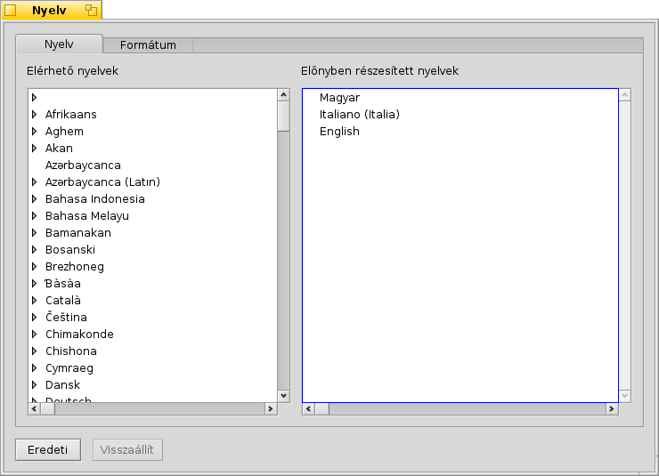
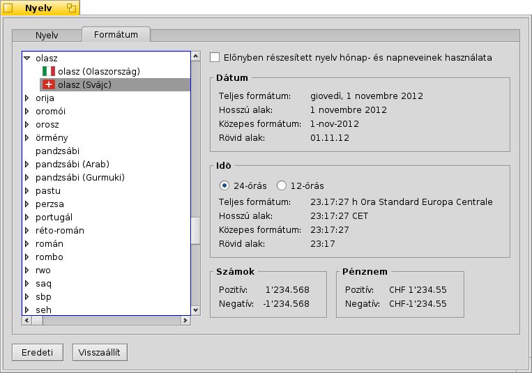

Nyelv (Locale)
Nyelv (Locale)
| Asztalsáv: | ||
| Útvonal: | /boot/system/preferences/Locale | |
| Beállítások: | ~/config/settings/Locale settings |
A Haiku nyelvi rendszere nem csak egyszerűen annyiból áll, hogy a szövegek lefordításra kerülnek, hanem például a formátumok, a dátum és az idő is az általunk megadott nyelvnek megfelelően jelenik meg.
 Nyelv
Nyelv
A Haiku már jelenleg is több nyelvhez tartalmaz fordítást, de sajnos még nem mindegyik teljes. Éppen ezért több nyelvet is választhatunk előnyben részesített nyelvként. Ha egy szöveg fordítása hiányzik, akkor az a következő előnyben részesített nyelv alapján kerül lefordításra. Ha valamelyik szöveget egyártalán nem tudja lefordítani a rendszer, akkor automatikusan az angol szöveg jelenik meg (mégha az nem is szerepel a listában).
A fenti példában az előnyben részesített nyelv a Magyar. A második az Olasz, és ha a lefordítandó szöveg ott is hiányzik, akkor az Angolt veszi figyelembe.
Amint látjuk, egy nyelvnek több változata is lehet, melyeket a nyelv kibontásával jeleníthetünk meg.
Formátum
A lapon a dátum és idő formátumát, valamint a szám illetve a pénz formátumot állíthatjuk be a választott előnyben részesített nyelvtől függetlenül.
Például magyarként dolgozhatsz olasz nyelvterületen Svájcban. Tehát, az elsődleges nyelv a Magyar, de a szám és a pénz formátuma épp olyan, mint a munkahelyen, Svájci/Olasz.
Arra is lehetőségünk van, hogy a nap és a hónap neveit (vagyis, például a fájlok módosítási dátumát) is lefordítsuk a kiválasztott nyelvre. Ehhez jelöljük be az jelölő négyzetet.
Bár a fenti példa nem mondható általánosnak, mégis remekül jelzi, hogy milyen rugalmas a rendszerünk.
Opciók - Ez a funkció le van tiltva, így a programok és a mappák az eredeti néven jelennek meg!
Az utolsó fülre kattintva mindössze egy módosítási lehetőségünk van: . Ezt az opciót csak akkor jelöljük be, ha a felület nyelvének megfelelően a programok és a fontosabb mappák nevét is le akarjuk fordítani. FIGYELEM: jelenleg ezt a megoldást nem minden program támogatja, így ha valamelyik nem indul, akkor kapcsoljuk ki ezt az opciót.
A módosítások azonnal életbe lépnek, habár a jelenleg futó programokat lehet, hogy újra kell indítani, hogy a választott nyelvnek megfelelően jelenjen meg.
| Az eredeti beállítások megadása. | ||
| A panel megnyitásakori állapot vsszaállítása. |